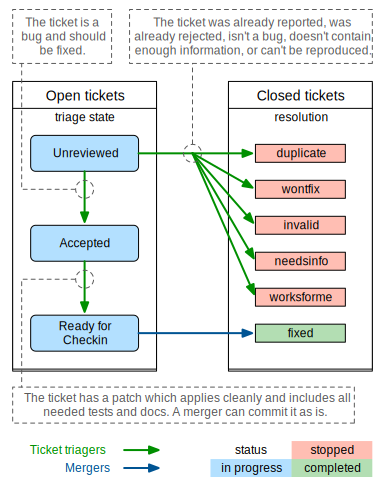

DjangoはTrac によってコートベースを管理しています。Tracはコミュニティーが育んだ、人々により発見されたバグや提案されたフィーチャーが集うガーデンです。ガーデンならば花も咲けば雑草も生えます、すなわち整理が必要です。皆んなが楽しめるよう綺麗にするため、あなたの助力が必要です。
他のガーデン同様に、我々も完璧を目指しますが、ケーキを持って食べることもできません。どんな綺麗な庭にも虫がいます。コミュニティーには、-- 善意での悪事 --をしてしまった良き人もいます。コミュニティーが自己管理し、問題を最小限に留め、新たの加入者にイロハを教えるのはコミュニティー全体の責務。
我々はTracをDjangoの成果を完璧に表現することを目指しますが、限界の存在を理解しています。コミュニティーへTracのメンテナンスを分布する度、間違いが生じることを許容します。何らかの間違いが生じることは想定内なので、Tracは「ほぼ正確」です。間違ってなんぼ、我々は期限を守ってからの完璧主義です。
我々はコミュニティーの参与を継続し、チケットをできるだけ正確に保ち、困惑ないし意見の相違がある場合にはメーリング リストで問題を提起し、議論することを大事にしています。
Djangoはコミュニティプロジェクトであり、すべての貢献が役立ちます。 あなた なしではこれを実現することはできません！
Unfortunately, not all bug reports and feature requests in the ticket tracker provide all the required details. A number of tickets have proposed solutions, but those don't necessarily meet all the requirements adhering to the guidelines for contributing.
One way to help out is to triage tickets that have been created by other users.
Most of the workflow is based around the concept of a ticket's triage stages. Each stage describes where in its lifetime a given ticket is at any time. Along with a handful of flags, this attribute easily tells us what and who each ticket is waiting on.
Since a picture is worth a thousand words, let's start there:
We've got two roles in this diagram:
Mergers: people with commit access who are responsible for making the final decision to merge a change.
Ticket triagers: anyone in the Django community who chooses to become involved in Django's development process. Our Trac installation is intentionally left open to the public, and anyone can triage tickets. Django is a community project, and we encourage triage by the community.
By way of example, here we see the lifecycle of an average ticket:
Alice creates a ticket and sends an incomplete pull request (no tests, incorrect implementation).
Bob reviews the pull request, marks the ticket as "Accepted", "needs tests", and "patch needs improvement", and leaves a comment telling Alice how the patch could be improved.
Alice updates the pull request, adding tests (but not changing the implementation). She removes the two flags.
Charlie reviews the pull request and resets the "patch needs improvement" flag with another comment about improving the implementation.
Alice updates the pull request, fixing the implementation. She removes the "patch needs improvement" flag.
Daisy reviews the pull request and marks the ticket as "Ready for checkin".
Jacob, a merger, reviews the pull request and merges it.
Some tickets require much less feedback than this, but then again some tickets require much much more.
Below we describe in more detail the various stages that a ticket may flow through during its lifetime.
The ticket has not been reviewed by anyone who felt qualified to make a judgment about whether the ticket contained a valid issue, a viable feature, or ought to be closed for any of the various reasons.
The big gray area! The absolute meaning of "accepted" is that the issue described in the ticket is valid and is in some stage of being worked on. Beyond that there are several considerations:
Accepted + No Flags
The ticket is valid, but no one has submitted a patch for it yet. Often this means you could safely start writing a fix for it. This is generally more true for the case of accepted bugs than accepted features. A ticket for a bug that has been accepted means that the issue has been verified by at least one triager as a legitimate bug - and should probably be fixed if possible. An accepted new feature may only mean that one triager thought the feature would be good to have, but this alone does not represent a consensus view or imply with any certainty that a patch will be accepted for that feature. Seek more feedback before writing an extensive contribution if you are in doubt.
Accepted + Has Patch
The ticket is waiting for people to review the supplied solution. This means downloading the patch and trying it out, verifying that it contains tests and docs, running the test suite with the included patch, and leaving feedback on the ticket.
Accepted + Has Patch + Needs ...
This means the ticket has been reviewed, and has been found to need further work. "Needs tests" and "Needs documentation" are self-explanatory. "Patch needs improvement" will generally be accompanied by a comment on the ticket explaining what is needed to improve the code.
The ticket was reviewed by any member of the community other than the person who supplied the patch and found to meet all the requirements for a commit-ready contribution. A merger now needs to give a final review prior to being committed.
There are a lot of pull requests. It can take a while for your patch to get reviewed. See the contributing code FAQ for some ideas here.
This stage isn't shown on the diagram. It's used sparingly to keep track of high-level ideas or long-term feature requests.
These tickets are uncommon and overall less useful since they don't describe concrete actionable issues. They are enhancement requests that we might consider adding someday to the framework if an excellent patch is submitted. They are not a high priority.
A number of flags, appearing as checkboxes in Trac, can be set on a ticket:
This means the ticket has an associated solution. These will be reviewed to ensure they adhere to the documented guidelines.
The following three fields (Needs documentation, Needs tests, Patch needs improvement) apply only if a patch has been supplied.
This flag is used for tickets with patches that need associated documentation. Complete documentation of features is a prerequisite before we can check them into the codebase.
This flags the patch as needing associated unit tests. Again, this is a required part of a valid contribution.
This flag means that although the ticket has a solution, it's not quite ready for checkin. This could mean the patch no longer applies cleanly, there is a flaw in the implementation, or that the code doesn't meet our standards.
Tickets that would require small, easy, changes.
チケットは以下のいずれかの タイプ に分類する必要があります。
何か新しいものを追加するためのチケット。
既存のものが壊れたり期待通りに動作しないときのためのチケット。
For when nothing is broken but something could be made cleaner, better, faster, stronger.
Tickets should be classified into components indicating which area of the Django codebase they belong to. This makes tickets better organized and easier to find.
The severity attribute is used to identify blockers, that is, issues that should get fixed before releasing the next version of Django. Typically those issues are bugs causing regressions from earlier versions or potentially causing severe data losses. This attribute is quite rarely used and the vast majority of tickets have a severity of "Normal".
It is possible to use the version attribute to indicate in which version the reported bug was identified.
This flag is used for tickets that relate to User Interface and User Experiences questions. For example, this flag would be appropriate for user-facing features in forms or the admin interface.
You may add your username or email address to this field to be notified when new contributions are made to the ticket.
With this field you may label a ticket with multiple keywords. This can be useful, for example, to group several tickets on the same theme. Keywords can either be comma or space separated. Keyword search finds the keyword string anywhere in the keywords. For example, clicking on a ticket with the keyword "form" will yield similar tickets tagged with keywords containing strings such as "formset", "modelformset", and "ManagementForm".
When a ticket has completed its useful lifecycle, it's time for it to be closed. Closing a ticket is a big responsibility, though. You have to be sure that the issue is really resolved, and you need to keep in mind that the reporter of the ticket may not be happy to have their ticket closed (unless it's fixed!). If you're not certain about closing a ticket, leave a comment with your thoughts instead.
If you do close a ticket, you should always make sure of the following:
issue が本当に解決したかよく確認してください。
チケットを閉じる決定について説明するコメントを残してください。
チケットを再び開いて改善できる方法がある場合には、他の人に知らせてください。
If the ticket is a duplicate, reference the original ticket. Also cross-reference the closed ticket by leaving a comment in the original one -- this allows to access more related information about the reported bug or requested feature.
礼儀正しくする。 チケットが閉じられて嬉しい人はいません。苛々させたり、落胆させてしまうこともあります。Django へのコントリビューションを諦めさせないための一番良い方法は、礼儀正しくフレンドリーに接して、そのチケットや将来の他のチケットの改善方法を提案することです。
チケットは、次のような複数の方法で解決できます。
パッチが Django に展開されて問題が解決したときに使われます。
チケットが正しくないことがわかったときに使われます。つまり、チケットに書かれた issue が、実際にはユーザーの間違いの結果だったり、Django とは別の何かに関する問題について書かれている場合や、バグレポートでもフィーチャーリクエストでもない場合 (たとえば、新しいユーザーは、サポートリクエストをチケットとして送ってしまうことがあります) などです。
Used when someone decides that the request isn't appropriate for consideration in Django. Sometimes a ticket is closed as "wontfix" with a request for the reporter to start a discussion on the Django Forum or django-developers mailing list if they feel differently from the rationale provided by the person who closed the ticket. Other times, a discussion precedes the decision to close a ticket. Always use the forum or mailing list to get a consensus before reopening tickets closed as "wontfix".
Used when another ticket covers the same issue. By closing duplicate tickets, we keep all the discussion in one place, which helps everyone.
オリジナルのバグを再現できるほど十分な詳細情報が含まれていないチケットに対して使われます。
チケットが報告された問題を再現するのに十分な情報を含まないが、それでも有効な可能性がある場合に使われます。追加情報が与えられた場合には、チケットを再びオープンする必要があります。
If you believe that the ticket was closed in error -- because you're still having the issue, or it's popped up somewhere else, or the triagers have made a mistake -- please reopen the ticket and provide further information. Again, please do not reopen tickets that have been marked as "wontfix" and bring the issue to the Django Forum or django-developers instead.
トリアージのプロセスは主にコミュニティーメンバーによって進められています。本当に、誰でも 助けられます。
参加するには、まず Trac 上でアカウントを作成します。アカウントを持っているけれどパスワードを忘れてしまった場合は、パスワードのリセットページ を使ってリセットできます。
次に、以下の方法で助けることができます。
"Unreviewed" (未レビュー) のチケットを "invalid"、"worksforme"、"duplicate"、"wontfix" のいずれかで閉じる。
Closing "Unreviewed" tickets as "needsinfo" when the description is too sparse to be actionable, or when they're feature requests requiring a discussion on the Django Forum or django-developers.
Correcting the "Needs tests", "Needs documentation", or "Has patch" flags for tickets where they are incorrectly set.
Setting the "Easy pickings" flag for tickets that are small and relatively straightforward.
カテゴリーが未設定のチケットに type (タイプ) を設定する。
Checking that old tickets are still valid. If a ticket hasn't seen any activity in a long time, it's possible that the problem has been fixed but the ticket hasn't yet been closed.
Identifying trends and themes in the tickets. If there are a lot of bug reports about a particular part of Django, it may indicate we should consider refactoring that part of the code. If a trend is emerging, you should raise it for discussion (referencing the relevant tickets) on the Django Forum or django-developers.
Verify if solutions submitted by others are correct. If they are correct and also contain appropriate documentation and tests then move them to the "Ready for Checkin" stage. If they are not correct then leave a comment to explain why and set the corresponding flags ("Patch needs improvement", "Needs tests" etc.).
注釈
The Reports page contains links to many useful Trac queries, including several that are useful for triaging tickets and reviewing proposals as suggested above.
より詳しい情報は、新しいコントリビューターへのアドバイス にあります。
ただし、チケットデータベースで作業するすべての一般コミュニティメンバーの人たちに対して、以下のことを必ずお願いしています。
自分自身のチケットを "Ready for checkin" に 更新しない でください。レビューした他の人のチケットを "Ready for checkin" としてマークすることは許されますが、自分が送信したパッチは、最低でも他の1人のコミュニティーメンバーにレビューしてもらう必要があります。
合意を得るために、Django Forum または django-developers に投稿することなく決定を 覆さない でください。
変更を加えるべきか自信がない場合は、変更を行う代わりに、チケットの心配点をコメントとして残すか、Django Forum または django-developers にメッセージを投稿してください。自信がない事自体は問題ありません。あなたの意見には依然として価値があります。
A regression is a bug that's present in some newer version of Django but not in an older one. An extremely helpful piece of information is the commit that introduced the regression. Knowing the commit that caused the change in behavior helps identify if the change was intentional or if it was an inadvertent side-effect. Here's how you can determine this.
Begin by writing a regression test for Django's test suite for the issue. For
example, we'll pretend we're debugging a regression in migrations. After you've
written the test and confirmed that it fails on the latest main branch, put it
in a separate file that you can run standalone. For our example, we'll pretend
we created tests/migrations/test_regression.py, which can be run with:
$ ./runtests.py migrations.test_regression
Next, we mark the current point in history as being "bad" since the test fails:
$ git bisect bad
You need to start by "git bisect start"
Do you want me to do it for you [Y/n]? y
Now, we need to find a point in git history before the regression was
introduced (i.e. a point where the test passes). Use something like
git checkout HEAD~100 to check out an earlier revision (100 commits earlier,
in this case). Check if the test fails. If so, mark that point as "bad"
(git bisect bad), then check out an earlier revision and recheck. Once you
find a revision where your test passes, mark it as "good":
$ git bisect good
Bisecting: X revisions left to test after this (roughly Y steps)
...
Now we're ready for the fun part: using git bisect run to automate the rest
of the process:
$ git bisect run tests/runtests.py migrations.test_regression
You should see git bisect use a binary search to automatically checkout
revisions between the good and bad commits until it finds the first "bad"
commit where the test fails.
Now, report your results on the Trac ticket, and please include the regression test as an attachment. When someone writes a fix for the bug, they'll already have your test as a starting point.
1月 22, 2025
{kind=link}